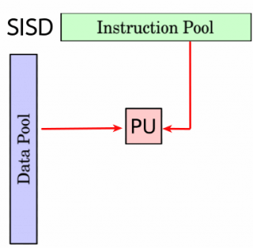
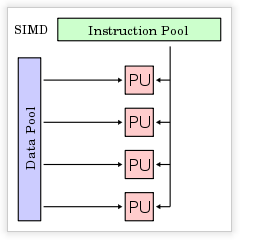

4.2.2 Arquitectura de Computadoras Secuenciales
Probablemente la clasificación más popular de computadores sea la clasificación de Flynn. Esta taxónoma de las arquitecturas está basada en la clasificación atendiendo al flujo de datos e instrucciones en un sistema. Un flujo de instrucciones es el conjunto de instrucciones secuenciales que son ejecutadas por un único procesador, y un flujo de datos es el flujo secuencial de datos requeridos por el flujo de instrucciones. Con estas consideraciones, Flynn clasifica los sistemas en cuatro categorías:
SISD (Single Instruction stream, Single Data stream)
Flujo único de instrucciones y flujo único de datos. Este el concepto de arquitectura serie de Von Neumann donde, en cualquier momento, sólo se está ejecutando una única instrucción. A menudo a los SISD se les conoce como computadores serie escalares. Todas las maquinas SISD poseen un registro simple que se llama contador de programa que asegura la ejecución en serie del programa. Conforme se van leyendo las instrucciones de la memoria, el contador de programa se actualiza para que apunte a la siguiente instrucción a procesar en serie. Prácticamente ningún computador puramente SISD se fabrica hoy en día ya que la mayoría de procesadores modernos incorporan algún grado de paralelizacion como es la segmentación de instrucciones o la posibilidad de lanzar dos instrucciones a un tiempo (superescalares).

MISD (Multiple Instruction stream, Single Data stream)
Flujo múltiple de instrucciones y único flujo de datos. Esto significa que varias instrucciones actúan sobre el mismo y único trozo de datos. Este tipo de máquinas se pueden interpretar de dos maneras. Una es considerar la clase de máquinas que requerirían que unidades de procesamiento diferentes recibieran instrucciones distintas operando sobre los mismos datos. Esta clase de arquitectura ha sido clasificada por numerosos arquitectos de computadores como impracticable o imposible, y en estos momentos no existen ejemplos que funcionen siguiendo este modelo.
